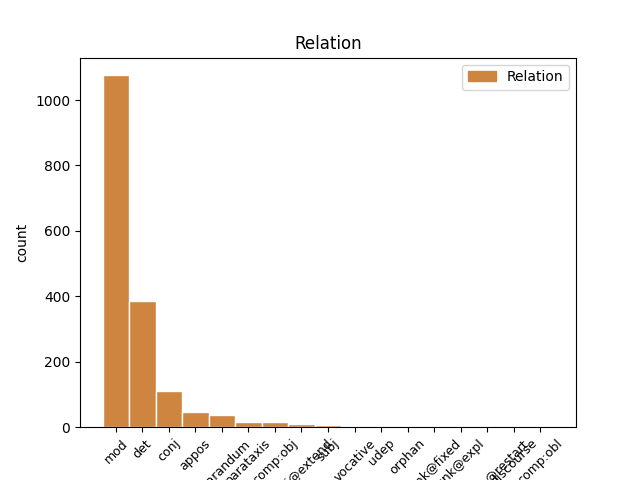
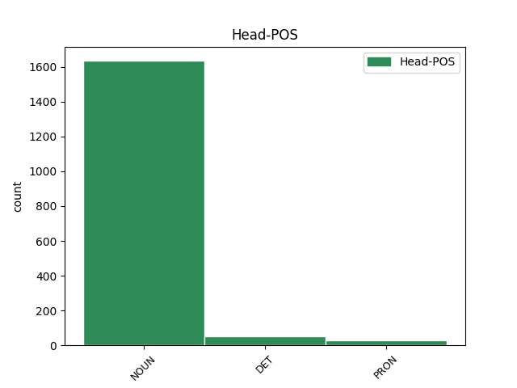
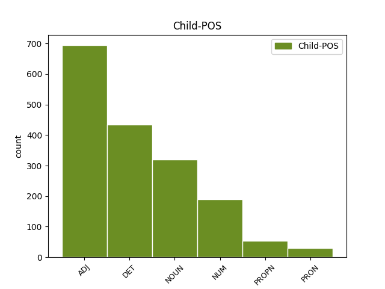

Distribution of features within this leaf



Agreement Rules sorted by frequency.
When the head token is NOUN and the dependent token is ADJ.
1 od _ _ _ _ 0 _ _ _
2 fructala _ _ _ _ 0 _ _ _
3 voda _ _ _ _ 0 _ _ _
4 samo _ _ _ _ 0 _ _ _
5 da _ _ _ _ 0 _ _ _
6 pač _ _ _ _ 0 _ _ _
7 eee _ _ _ _ 0 _ _ _
8 z _ _ _ _ 0 _ _ _
9 okusom _ _ _ _ 0 _ _ _
10 ampak _ _ _ _ 0 _ _ _
11 da _ _ _ _ 0 _ _ _
12 ni _ _ _ _ 0 _ _ _
13 nič _ _ _ _ 0 _ _ _
14 drugega _ _ _ _ 0 _ _ _
15 kakor _ _ _ _ 0 _ _ _
16 sama sam ADJ Agpfsn Case=Nom|Degree=Pos|Gender=Fem|Number=Sing 17 mod _ msd=Ppnzei|word=sama
17 voda voda NOUN Ncfsn Case=Nom|Gender=Fem|Number=Sing 0 _ _ _
18 pa _ _ _ _ 0 _ _ _
19 sadje _ _ _ _ 0 _ _ _
When the head token is NOUN and the dependent token is DET.
1 aha _ _ _ _ 0 _ _ _
2 kul _ _ _ _ 0 _ _ _
3 eee _ _ _ _ 0 _ _ _
4 čakaj _ _ _ _ 0 _ _ _
5 še _ _ _ _ 0 _ _ _
6 kako kak DET Pq-nsn Case=Nom|Gender=Neut|Number=Sing|PronType=Int 7 det _ msd=Zv-sei|word=kako
7 vprašanje vprašanje NOUN Ncnsn Case=Nom|Gender=Neut|Number=Sing 0 _ _ _
8 eee _ _ _ _ 0 _ _ _
9 to _ _ _ _ 0 _ _ _
10 pa _ _ _ _ 0 _ _ _
11 eee _ _ _ _ 0 _ _ _
12 če _ _ _ _ 0 _ _ _
13 če _ _ _ _ 0 _ _ _
14 nabavim _ _ _ _ 0 _ _ _
15 to _ _ _ _ 0 _ _ _
16 imate _ _ _ _ 0 _ _ _
17 k _ _ _ _ 0 _ _ _
18 [gap] _ _ _ _ 0 _ _ _
19 kako _ _ _ _ 0 _ _ _
20 je _ _ _ _ 0 _ _ _
21 tako _ _ _ _ 0 _ _ _
22 zdaj _ _ _ _ 0 _ _ _
23 ena _ _ _ _ 0 _ _ _
24 cena _ _ _ _ 0 _ _ _
25 za _ _ _ _ 0 _ _ _
26 en _ _ _ _ 0 _ _ _
27 mesec _ _ _ _ 0 _ _ _
28 če _ _ _ _ 0 _ _ _
29 bi _ _ _ _ 0 _ _ _
30 jaz _ _ _ _ 0 _ _ _
31 to _ _ _ _ 0 _ _ _
32 hotel _ _ _ _ 0 _ _ _
33 pač _ _ _ _ 0 _ _ _
34 en _ _ _ _ 0 _ _ _
35 mesec _ _ _ _ 0 _ _ _
36 hotel _ _ _ _ 0 _ _ _
37 to _ _ _ _ 0 _ _ _
38 jest _ _ _ _ 0 _ _ _
39 ? _ _ _ _ 0 _ _ _
When the head token is NOUN and the dependent token is NOUN.
1 od _ _ _ _ 0 _ _ _
2 fructala _ _ _ _ 0 _ _ _
3 voda _ _ _ _ 0 _ _ _
4 samo _ _ _ _ 0 _ _ _
5 da _ _ _ _ 0 _ _ _
6 pač _ _ _ _ 0 _ _ _
7 eee _ _ _ _ 0 _ _ _
8 z _ _ _ _ 0 _ _ _
9 okusom _ _ _ _ 0 _ _ _
10 ampak _ _ _ _ 0 _ _ _
11 da _ _ _ _ 0 _ _ _
12 ni _ _ _ _ 0 _ _ _
13 nič _ _ _ _ 0 _ _ _
14 drugega _ _ _ _ 0 _ _ _
15 kakor _ _ _ _ 0 _ _ _
16 sama _ _ _ _ 0 _ _ _
17 voda voda NOUN Ncfsn Case=Nom|Gender=Fem|Number=Sing 0 _ _ _
18 pa _ _ _ _ 0 _ _ _
19 sadje sadje NOUN Ncnsn Case=Nom|Gender=Neut|Number=Sing 17 conj _ msd=Sosei|word=sadje
When the head token is NOUN and the dependent token is NUM.
1 aha _ _ _ _ 0 _ _ _
2 kul _ _ _ _ 0 _ _ _
3 eee _ _ _ _ 0 _ _ _
4 čakaj _ _ _ _ 0 _ _ _
5 še _ _ _ _ 0 _ _ _
6 kako _ _ _ _ 0 _ _ _
7 vprašanje _ _ _ _ 0 _ _ _
8 eee _ _ _ _ 0 _ _ _
9 to _ _ _ _ 0 _ _ _
10 pa _ _ _ _ 0 _ _ _
11 eee _ _ _ _ 0 _ _ _
12 če _ _ _ _ 0 _ _ _
13 če _ _ _ _ 0 _ _ _
14 nabavim _ _ _ _ 0 _ _ _
15 to _ _ _ _ 0 _ _ _
16 imate _ _ _ _ 0 _ _ _
17 k _ _ _ _ 0 _ _ _
18 [gap] _ _ _ _ 0 _ _ _
19 kako _ _ _ _ 0 _ _ _
20 je _ _ _ _ 0 _ _ _
21 tako _ _ _ _ 0 _ _ _
22 zdaj _ _ _ _ 0 _ _ _
23 ena _ _ _ _ 0 _ _ _
24 cena _ _ _ _ 0 _ _ _
25 za _ _ _ _ 0 _ _ _
26 en _ _ _ _ 0 _ _ _
27 mesec _ _ _ _ 0 _ _ _
28 če _ _ _ _ 0 _ _ _
29 bi _ _ _ _ 0 _ _ _
30 jaz _ _ _ _ 0 _ _ _
31 to _ _ _ _ 0 _ _ _
32 hotel _ _ _ _ 0 _ _ _
33 pač _ _ _ _ 0 _ _ _
34 en en NUM Mlpmsa Case=Acc|Gender=Masc|Number=Sing|NumForm=Word|NumType=Card 35 mod _ msd=Kbzmet|word=en
35 mesec mesec NOUN Ncmsan Animacy=Inan|Case=Acc|Gender=Masc|Number=Sing 0 _ _ _
36 hotel _ _ _ _ 0 _ _ _
37 to _ _ _ _ 0 _ _ _
38 jest _ _ _ _ 0 _ _ _
39 ? _ _ _ _ 0 _ _ _
When the head token is DET and the dependent token is DET.
1 te _ _ _ _ 0 _ _ _
2 proge _ _ _ _ 0 _ _ _
3 gor _ _ _ _ 0 _ _ _
4 recimo _ _ _ _ 0 _ _ _
5 eee _ _ _ _ 0 _ _ _
6 sedežnice _ _ _ _ 0 _ _ _
7 vlečnice _ _ _ _ 0 _ _ _
8 pa _ _ _ _ 0 _ _ _
9 to ta DET Pd-nsn Case=Nom|Gender=Neut|Number=Sing|PronType=Dem 0 _ _ _
10 vse ves DET Pg-nsn Case=Nom|Gender=Neut|Number=Sing|PronType=Tot 9 mod _ msd=Zc-sei|word=vse
11 je _ _ _ _ 0 _ _ _
12 recimo _ _ _ _ 0 _ _ _
13 šest _ _ _ _ 0 _ _ _
14 petnajst _ _ _ _ 0 _ _ _
15 trinajst _ _ _ _ 0 _ _ _
16 in _ _ _ _ 0 _ _ _
17 ob _ _ _ _ 0 _ _ _
18 in _ _ _ _ 0 _ _ _
19 proga _ _ _ _ 0 _ _ _
20 je _ _ _ _ 0 _ _ _
21 recimo _ _ _ _ 0 _ _ _
22 rdeča _ _ _ _ 0 _ _ _
23 narisana _ _ _ _ 0 _ _ _
24 pač _ _ _ _ 0 _ _ _
25 rdeča _ _ _ _ 0 _ _ _
26 srednje _ _ _ _ 0 _ _ _
27 težka _ _ _ _ 0 _ _ _
28 ali _ _ _ _ 0 _ _ _
29 pa _ _ _ _ 0 _ _ _
30 modra _ _ _ _ 0 _ _ _
31 pa _ _ _ _ 0 _ _ _
32 je _ _ _ _ 0 _ _ _
33 številka _ _ _ _ 0 _ _ _
34 sedem _ _ _ _ 0 _ _ _
35 ali _ _ _ _ 0 _ _ _
36 pa _ _ _ _ 0 _ _ _
37 ta _ _ _ _ 0 _ _ _
38 je _ _ _ _ 0 _ _ _
39 devet _ _ _ _ 0 _ _ _
40 ali _ _ _ _ 0 _ _ _
41 pa _ _ _ _ 0 _ _ _
42 ne _ _ _ _ 0 _ _ _
43 vem _ _ _ _ 0 _ _ _
44 koliko _ _ _ _ 0 _ _ _
When the head token is NOUN and the dependent token is PROPN.
1 kvinton _ _ _ _ 0 _ _ _
2 plošča plošča NOUN Ncfsn Case=Nom|Gender=Fem|Number=Sing 0 _ _ _
3 razirklinga Razirklinga PROPN Npfsn Case=Nom|Gender=Fem|Number=Sing 2 mod _ msd=Slzei|word=Razirklinga
4 in _ _ _ _ 0 _ _ _
5 skladba _ _ _ _ 0 _ _ _
6 led _ _ _ _ 0 _ _ _
When the head token is PRON and the dependent token is PRON.
1 kaj kaj PRON Pq-nsn Case=Nom|Gender=Neut|Number=Sing|PronType=Int 2 reparandum _ msd=Zv-sei|word=kaj
2 kaj kaj PRON Pq-nsn Case=Nom|Gender=Neut|Number=Sing|PronType=Int 0 _ _ _
3 na _ _ _ _ 0 _ _ _
4 obrazu _ _ _ _ 0 _ _ _
5 se _ _ _ _ 0 _ _ _
6 spreminja _ _ _ _ 0 _ _ _
7 pri _ _ _ _ 0 _ _ _
8 mimiki _ _ _ _ 0 _ _ _
9 ? _ _ _ _ 0 _ _ _
When the head token is PRON and the dependent token is DET.
1 in _ _ _ _ 0 _ _ _
2 zgolj _ _ _ _ 0 _ _ _
3 za _ _ _ _ 0 _ _ _
4 primer _ _ _ _ 0 _ _ _
5 preko _ _ _ _ 0 _ _ _
6 sto _ _ _ _ 0 _ _ _
7 tisoč _ _ _ _ 0 _ _ _
8 evrov _ _ _ _ 0 _ _ _
9 da _ _ _ _ 0 _ _ _
10 naša _ _ _ _ 0 _ _ _
11 država _ _ _ _ 0 _ _ _
12 tudi _ _ _ _ 0 _ _ _
13 delavka _ _ _ _ 0 _ _ _
14 mure _ _ _ _ 0 _ _ _
15 tudi _ _ _ _ 0 _ _ _
16 vsi ves DET Pg-mpn Case=Nom|Gender=Masc|Number=Plur|PronType=Tot 17 det _ msd=Zc-mmi|word=vsi
17 mi jaz PRON Pp1mpn Case=Nom|Gender=Masc|Number=Plur|Person=1|PronType=Prs 0 _ _ _
18 za _ _ _ _ 0 _ _ _
19 to _ _ _ _ 0 _ _ _
20 da _ _ _ _ 0 _ _ _
21 leto _ _ _ _ 0 _ _ _
22 dni _ _ _ _ 0 _ _ _
23 stoji _ _ _ _ 0 _ _ _
24 plakat _ _ _ _ 0 _ _ _
25 v _ _ _ _ 0 _ _ _
26 b _ _ _ _ 0 _ _ _
27 [gap] _ _ _ _ 0 _ _ _
28 na _ _ _ _ 0 _ _ _
29 bruseljskem _ _ _ _ 0 _ _ _
30 letališču _ _ _ _ 0 _ _ _
When the head token is NOUN and the dependent token is PRON.
1 vaš _ _ _ _ 0 _ _ _
2 komentar komentar NOUN Ncmsn Case=Nom|Gender=Masc|Number=Sing 0 _ _ _
3 kaj _ _ _ _ 0 _ _ _
4 pravzaprav _ _ _ _ 0 _ _ _
5 vi _ _ _ _ 0 _ _ _
6 eee _ _ _ _ 0 _ _ _
7 o _ _ _ _ 0 _ _ _
8 tem _ _ _ _ 0 _ _ _
9 mmm _ _ _ _ 0 _ _ _
10 menite _ _ _ _ 0 _ _ _
11 kako _ _ _ _ 0 _ _ _
12 ste _ _ _ _ 0 _ _ _
13 videli _ _ _ _ 0 _ _ _
14 nebesedno _ _ _ _ 0 _ _ _
15 k _ _ _ _ 0 _ _ _
16 [gap] _ _ _ _ 0 _ _ _
17 komunikacijo _ _ _ _ 0 _ _ _
18 ste _ _ _ _ 0 _ _ _
19 pozorni _ _ _ _ 0 _ _ _
20 na _ _ _ _ 0 _ _ _
21 eem _ _ _ _ 0 _ _ _
22 govorce _ _ _ _ 0 _ _ _
23 pet _ _ _ _ 0 _ _ _
24 jih _ _ _ _ 0 _ _ _
25 je _ _ _ _ 0 _ _ _
26 bilo _ _ _ _ 0 _ _ _
27 kdo kdo PRON Pq-msn Case=Nom|Gender=Masc|Number=Sing|PronType=Int 2 parataxis _ msd=Zv-mei|word=kdo
28 kako _ _ _ _ 0 _ _ _
When the head token is PRON and the dependent token is NUM.
1 pa _ _ _ _ 0 _ _ _
2 to _ _ _ _ 0 _ _ _
3 za _ _ _ _ 0 _ _ _
4 vaju ti PRON Pp2-da Case=Acc|Number=Dual|Person=2|PronType=Prs 0 _ _ _
5 dva dva NUM Mlcmda Case=Acc|Gender=Masc|Number=Dual|NumForm=Word|NumType=Card 4 mod _ msd=Kbgmdt|word=vajidva[split_2-2]
6 tudi _ _ _ _ 0 _ _ _
7 pa _ _ _ _ 0 _ _ _
8 što _ _ _ _ 0 _ _ _
9 tako _ _ _ _ 0 _ _ _
10 koga _ _ _ _ 0 _ _ _
11 po _ _ _ _ 0 _ _ _
12 [gap] _ _ _ _ 0 _ _ _
13 eee _ _ _ _ 0 _ _ _
14 me _ _ _ _ 0 _ _ _
15 pozna _ _ _ _ 0 _ _ _
16 pa _ _ _ _ 0 _ _ _
17 to _ _ _ _ 0 _ _ _
When the head token is DET and the dependent token is NOUN.
1 ker _ _ _ _ 0 _ _ _
2 je _ _ _ _ 0 _ _ _
3 težka _ _ _ _ 0 _ _ _
4 borba _ _ _ _ 0 _ _ _
5 za _ _ _ _ 0 _ _ _
6 eee _ _ _ _ 0 _ _ _
7 tisto tisti DET Pd-nsa Case=Acc|Gender=Neut|Number=Sing|PronType=Dem 0 _ _ _
8 prostor prostor NOUN Ncmsan Animacy=Inan|Case=Acc|Gender=Masc|Number=Sing 7 appos _ msd=Sometn|word=prostor
When the head token is DET and the dependent token is PRON.
1 eee _ _ _ _ 0 _ _ _
2 eee _ _ _ _ 0 _ _ _
3 ona on PRON Pp3fsn Case=Nom|Gender=Fem|Number=Sing|Person=3|PronType=Prs 8 reparandum _ msd=Zotzei|word=ona
4 ona _ _ _ _ 0 _ _ _
5 je _ _ _ _ 0 _ _ _
6 ona _ _ _ _ 0 _ _ _
7 je _ _ _ _ 0 _ _ _
8 taka tak DET Pd-fsn Case=Nom|Gender=Fem|Number=Sing|PronType=Dem 0 _ _ _
When the head token is DET and the dependent token is NUM.
1 letos _ _ _ _ 0 _ _ _
2 smo _ _ _ _ 0 _ _ _
3 prvič _ _ _ _ 0 _ _ _
4 poslali _ _ _ _ 0 _ _ _
5 enega en NUM Mlpmsa Case=Acc|Gender=Masc|Number=Sing|NumForm=Word|NumType=Card 6 mod _ msd=Kbzmet|word=enega
6 našega naš DET Ps1msap Case=Acc|Gender=Masc|Number=Sing|Number[psor]=Plur|Person=1|Poss=Yes|PronType=Prs 0 _ _ _
7 eee _ _ _ _ 0 _ _ _
8 se _ _ _ _ 0 _ _ _
9 pravi _ _ _ _ 0 _ _ _
10 enega _ _ _ _ 0 _ _ _
11 een _ _ _ _ 0 _ _ _
12 ne _ _ _ _ 0 _ _ _
13 morem _ _ _ _ 0 _ _ _
14 reči _ _ _ _ 0 _ _ _
15 najstnika _ _ _ _ 0 _ _ _
16 ne _ _ _ _ 0 _ _ _
When the head token is PRON and the dependent token is ADJ.
1 seveda _ _ _ _ 0 _ _ _
2 je _ _ _ _ 0 _ _ _
3 pohvalno _ _ _ _ 0 _ _ _
4 da _ _ _ _ 0 _ _ _
5 imamo _ _ _ _ 0 _ _ _
6 eee _ _ _ _ 0 _ _ _
7 več _ _ _ _ 0 _ _ _
8 eee _ _ _ _ 0 _ _ _
9 ministric _ _ _ _ 0 _ _ _
10 v _ _ _ _ 0 _ _ _
11 tej _ _ _ _ 0 _ _ _
12 vladi _ _ _ _ 0 _ _ _
13 vendar _ _ _ _ 0 _ _ _
14 pa _ _ _ _ 0 _ _ _
15 jaz jaz PRON Pp1-sn Case=Nom|Number=Sing|Person=1|PronType=Prs 0 _ _ _
16 sama sam ADJ Agpfsn Case=Nom|Degree=Pos|Gender=Fem|Number=Sing 15 mod _ msd=Ppnzei|word=sama
17 eem _ _ _ _ 0 _ _ _
18 ne _ _ _ _ 0 _ _ _
19 ocenjujem _ _ _ _ 0 _ _ _
20 ljudi _ _ _ _ 0 _ _ _
21 na _ _ _ _ 0 _ _ _
22 takšnih _ _ _ _ 0 _ _ _
23 položajih _ _ _ _ 0 _ _ _
24 po _ _ _ _ 0 _ _ _
25 spolu _ _ _ _ 0 _ _ _
26 ampak _ _ _ _ 0 _ _ _
27 po _ _ _ _ 0 _ _ _
28 tem _ _ _ _ 0 _ _ _
29 eee _ _ _ _ 0 _ _ _
30 kako _ _ _ _ 0 _ _ _
31 učinkoviti _ _ _ _ 0 _ _ _
32 so _ _ _ _ 0 _ _ _
33 eee _ _ _ _ 0 _ _ _
34 ali _ _ _ _ 0 _ _ _
35 dovolj _ _ _ _ 0 _ _ _
36 dobro _ _ _ _ 0 _ _ _
37 poznajo _ _ _ _ 0 _ _ _
38 resor _ _ _ _ 0 _ _ _
39 na _ _ _ _ 0 _ _ _
40 katerem _ _ _ _ 0 _ _ _
41 so _ _ _ _ 0 _ _ _
42 predvsem _ _ _ _ 0 _ _ _
43 pa _ _ _ _ 0 _ _ _
44 ali _ _ _ _ 0 _ _ _
45 znajo _ _ _ _ 0 _ _ _
46 v _ _ _ _ 0 _ _ _
47 nekem _ _ _ _ 0 _ _ _
48 trenutku _ _ _ _ 0 _ _ _
49 odreagirati _ _ _ _ 0 _ _ _
50 eee _ _ _ _ 0 _ _ _
51 pravilno _ _ _ _ 0 _ _ _
When the head token is DET and the dependent token is ADJ.
1 in _ _ _ _ 0 _ _ _
2 pač _ _ _ _ 0 _ _ _
3 ne _ _ _ _ 0 _ _ _
4 vem _ _ _ _ 0 _ _ _
5 zdaj _ _ _ _ 0 _ _ _
6 kaj _ _ _ _ 0 _ _ _
7 ali _ _ _ _ 0 _ _ _
8 imeli _ _ _ _ 0 _ _ _
9 svoj _ _ _ _ 0 _ _ _
10 lasten _ _ _ _ 0 _ _ _
11 piknik _ _ _ _ 0 _ _ _
12 ali _ _ _ _ 0 _ _ _
13 kaj _ _ _ _ 0 _ _ _
14 jaz _ _ _ _ 0 _ _ _
15 vem _ _ _ _ 0 _ _ _
16 nekaj _ _ _ _ 0 _ _ _
17 v _ _ _ _ 0 _ _ _
18 bistvu _ _ _ _ 0 _ _ _
19 čim _ _ _ _ 0 _ _ _
20 bolj _ _ _ _ 0 _ _ _
21 takega tak DET Pd-msa Case=Acc|Gender=Masc|Number=Sing|PronType=Dem 0 _ _ _
22 neformalnega neformalen ADJ Agpmsa Case=Acc|Degree=Pos|Gender=Masc|Number=Sing 21 mod _ msd=Ppnmet|word=neformalenga
23 bi _ _ _ _ 0 _ _ _
24 jaz _ _ _ _ 0 _ _ _
When the head token is PRON and the dependent token is NOUN.
1 no _ _ _ _ 0 _ _ _
2 in _ _ _ _ 0 _ _ _
3 sem _ _ _ _ 0 _ _ _
4 poklicala _ _ _ _ 0 _ _ _
5 na _ _ _ _ 0 _ _ _
6 vsa _ _ _ _ 0 _ _ _
7 planinska _ _ _ _ 0 _ _ _
8 društva _ _ _ _ 0 _ _ _
9 če _ _ _ _ 0 _ _ _
10 potrebujejo _ _ _ _ 0 _ _ _
11 koga kdo PRON Pq-msa Case=Acc|Gender=Masc|Number=Sing|PronType=Int 0 _ _ _
12 kakšnega _ _ _ _ 0 _ _ _
13 prostovoljca prostovoljec NOUN Ncmsay Animacy=Anim|Case=Acc|Gender=Masc|Number=Sing 11 appos _ msd=Sometd|word=prostovoljca
14 [:voice] _ _ _ _ 0 _ _ _
Disagree Examples:
1 na _ _ _ _ 0 _ _ _
2 obletnico obletnica NOUN Ncfsa Case=Acc|Gender=Fem|Number=Sing 0 _ _ _
3 titove _ _ _ _ 0 _ _ _
4 smrti smrt NOUN Ncfsg Case=Gen|Gender=Fem|Number=Sing 2 mod _ msd=Sozer|word=smrti
5 eee _ _ _ _ 0 _ _ _
6 pa _ _ _ _ 0 _ _ _
7 tudi _ _ _ _ 0 _ _ _
8 na _ _ _ _ 0 _ _ _
9 vašo _ _ _ _ 0 _ _ _
10 taščo _ _ _ _ 0 _ _ _
11 ste _ _ _ _ 0 _ _ _
12 se _ _ _ _ 0 _ _ _
13 spomnili _ _ _ _ 0 _ _ _
1 pravzaprav _ _ _ _ 0 _ _ _
2 sva _ _ _ _ 0 _ _ _
3 prišla _ _ _ _ 0 _ _ _
4 skupaj _ _ _ _ 0 _ _ _
5 v _ _ _ _ 0 _ _ _
6 službo _ _ _ _ 0 _ _ _
7 prvega _ _ _ _ 0 _ _ _
8 septembra _ _ _ _ 0 _ _ _
9 leta leto NOUN Ncnsg Case=Gen|Gender=Neut|Number=Sing 0 _ _ _
10 triinsedemdeset triinsedemdeset NUM Mlc-pn Case=Nom|Number=Plur|NumForm=Word|NumType=Card 9 mod _ msd=Kbg-mi|word=triinsedemdeset
1 ker _ _ _ _ 0 _ _ _
2 sem _ _ _ _ 0 _ _ _
3 se _ _ _ _ 0 _ _ _
4 poročil _ _ _ _ 0 _ _ _
5 z _ _ _ _ 0 _ _ _
6 njeno _ _ _ _ 0 _ _ _
7 hčerko _ _ _ _ 0 _ _ _
8 in _ _ _ _ 0 _ _ _
9 imeli _ _ _ _ 0 _ _ _
10 smo _ _ _ _ 0 _ _ _
11 veliko _ _ _ _ 0 _ _ _
12 skupnih _ _ _ _ 0 _ _ _
13 interesov interes NOUN Ncmpg Case=Gen|Gender=Masc|Number=Plur 0 _ _ _
14 tudi _ _ _ _ 0 _ _ _
15 glasbo glasba NOUN Ncfsa Case=Acc|Gender=Fem|Number=Sing 13 appos _ msd=Sozet|word=glasbo
16 no _ _ _ _ 0 _ _ _
17 zato _ _ _ _ 0 _ _ _
18 sem _ _ _ _ 0 _ _ _
19 tudi _ _ _ _ 0 _ _ _
20 eee _ _ _ _ 0 _ _ _
21 za _ _ _ _ 0 _ _ _
22 konec _ _ _ _ 0 _ _ _
23 izbral _ _ _ _ 0 _ _ _
24 eno _ _ _ _ 0 _ _ _
25 skladbo _ _ _ _ 0 _ _ _
26 ki _ _ _ _ 0 _ _ _
27 jo _ _ _ _ 0 _ _ _
28 je _ _ _ _ 0 _ _ _
29 imela _ _ _ _ 0 _ _ _
30 zelo _ _ _ _ 0 _ _ _
31 rada _ _ _ _ 0 _ _ _
32 in _ _ _ _ 0 _ _ _
33 danes _ _ _ _ 0 _ _ _
34 bi _ _ _ _ 0 _ _ _
35 imela _ _ _ _ 0 _ _ _
36 rojstni _ _ _ _ 0 _ _ _
37 dan _ _ _ _ 0 _ _ _
1 absolutno _ _ _ _ 0 _ _ _
2 saj _ _ _ _ 0 _ _ _
3 so _ _ _ _ 0 _ _ _
4 dobili _ _ _ _ 0 _ _ _
5 tudi _ _ _ _ 0 _ _ _
6 sedem sedem NUM Mlc-pa Case=Acc|Number=Plur|NumForm=Word|NumType=Card 7 mod _ msd=Kbg-mt|word=sedem
7 točk točka NOUN Ncfpg Case=Gen|Gender=Fem|Number=Plur 0 _ _ _
8 eee _ _ _ _ 0 _ _ _
9 poslušalcev _ _ _ _ 0 _ _ _
10 tako _ _ _ _ 0 _ _ _
11 da _ _ _ _ 0 _ _ _
12 to _ _ _ _ 0 _ _ _
13 tudi _ _ _ _ 0 _ _ _
14 ni _ _ _ _ 0 _ _ _
15 malo _ _ _ _ 0 _ _ _
16 ne _ _ _ _ 0 _ _ _
1 množičen _ _ _ _ 0 _ _ _
2 morilec _ _ _ _ 0 _ _ _
3 ali _ _ _ _ 0 _ _ _
4 eee _ _ _ _ 0 _ _ _
5 zakrknjen _ _ _ _ 0 _ _ _
6 storilec storilec NOUN Ncmsn Case=Nom|Gender=Masc|Number=Sing 0 _ _ _
7 kakšnega _ _ _ _ 0 _ _ _
8 hudega _ _ _ _ 0 _ _ _
9 kaznivega _ _ _ _ 0 _ _ _
10 dejanja dejanje NOUN Ncnsg Case=Gen|Gender=Neut|Number=Sing 6 mod _ msd=Soser|word=dejanja
11 ne _ _ _ _ 0 _ _ _
12 razmišlja _ _ _ _ 0 _ _ _
13 o _ _ _ _ 0 _ _ _
14 kazni _ _ _ _ 0 _ _ _